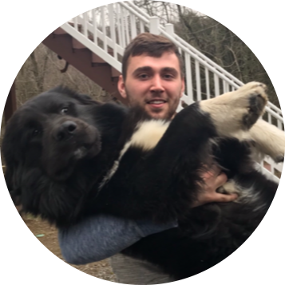

|  |
Rich W. "Will" MillnerWeb Developer and Systems Administrator If you have an idea for a website or application, reach out. I'd love to help you build your site and help you achieve your business goals. I've been a hobbyist web developer for a few years now, having worked on various websites and applications on and off. Over the past few months, I've been studying new technologies and building a portfolio, as I seek to transition into a full-time professional web dev position. Currently, I work as a System Administrator - for about 4 years now. As part of the IaaS team in my organization, I also have extensive experience in managing the Cisco UCS hardware and VMware technologies that facilitate our private cloud. More specifically, I manage Cisco UCS Fabric Interconnects, Chassis, and Servers; and I utilize VMware technologies such as vCenter, ESXi, vRealize, and VROPs. In recent months, I have become increasingly interested in pursuing a full-time career in web development. As such, I am open to assist with any web design/development projects you have that might contribute to my growth as a web developer. Likewise, if you or your company is looking to add a developer to your team, I'd love to share my resume and discuss my qualifications. Thanks for the interest in my web page. Check out my education and experience details below. Also, feel free to contact me using the link at the bottom of the page. |
| Dates | Work |
|---|---|
| 2018-2019 | Junior System Administrator (Intern) |
| 2019-2020 | System Administrator I |
| 2020-Present | System Administrator II |